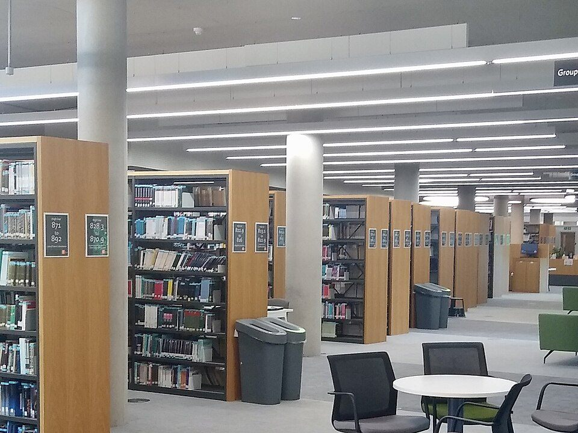

Ciências da Natureza
Biologia, Química e Física: seres vivos, química orgânica, polímeros e radiação.
Ver área →Formação geral
Além da formação técnica em IoT, o Ensino Médio é organizado em quatro áreas do conhecimento. Em cada uma, registro o que estudei no 3º ano e os trabalhos que fiz.
Biologia, Química e Física: seres vivos, química orgânica, polímeros e radiação.
Ver área →
História, Geografia, Filosofia e Sociologia: guerras e ditaduras, relações internacionais, ética e desigualdade.
Ver área →
Português, Literatura, Inglês, Artes e Educação Física: leitura, fanzine, seminários e mostra de artes.
Ver área →
Estatística, matemática financeira, probabilidade, funções e geometria.
Ver área →